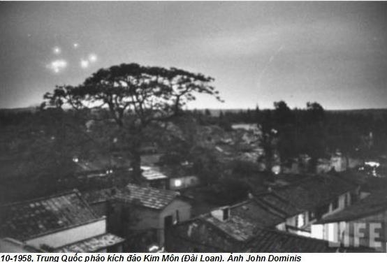
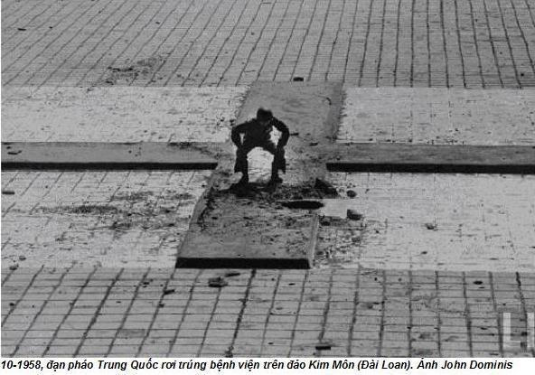

Chương 31

ã lâu lắm mới lại có một mùa hè tuyệt vời như mùa hè năm nay. Đêm nào trời cũng mưa còn ban ngày lại nắng dịu. Chẳng ai nghi ngờ, vụ thu hoạch mùa thu năm nay sẽ bội thu nhất trong lịch sử Trung Quốc. Cả nước Trung Quốc ngập chìm trong ngất ngây, tràn trề cảm kích và rất đỗi lạc quan.
Đầu tiên, chúng tôi tới thăm vài công xã mới thành lập ở tỉnh Hà Bắc. Tinh thần lạc quan của nông dân được thể hiện bằng cả những cái tên đặt cho tổ chức mới, những cái tên hứa hẹn một tương lai vẻ vang và tương lai của cách mạng, như “Công xã cộng sản”, Công xã Bình minh”, “Công xã Rạng đông”, “Công xã Cờ đỏ”.
Sau đó chúng tôi đến Hà Nam, nơi viên bí thư thứ nhất Vũ Chí Phú, một người thấp béo và mau miệng, đưa chúng tôi đi bằng ô tô đọc theo những con đường không trải nhựa, đầy bụi bặm đọc ngang trong khắp tỉnh của ông. Chúng tôi đi trên một đoàn xe với hàng chục người cả thảy, gồm một đơn vị lính có vũ trang dưới sự chỉ huy của Vương Kính Tiên, một đội bảo vệ tỉnh của Vũ Chí Phú, các phóng viên báo Tân Hoa và vài phóng viên của báo đảng tỉnh Hà Nam. Mao đã dặn đi dặn lại phải giữ bí mật, không ngờ cánh báo chí lại rùm beng lên.
Trời tháng Tám nóng toát mồ hôi. Chúng tôi đội những chiếc mũ cói rộng vành để che nắng. Mỗi khi nghỉ chân ở đâu đó, có người đưa đến cho chúng tôi những chiếc khăn ướt để lau cho mát. Hai chiếc xe tải chở đưa hấu tươi và ngọt lúc nào cũng đi theo. Dưa hấu là món giải khát tốt nhất trong cái nóng như thiêu như đốt này. Mao không hề bận tâm đến cái nóng. Ông chẳng đụng đến đưa hấu, trong khi nhiều người khác trong xe ông đã đổ xô vào thứ quà mọng nước này.
Mao phấn khởi vì ông được tận hưởng cái thú trở về nông thôn. Mỗi khi dẫm phải phân bò bẩn giày, nhưng ông không để cho ai lau chùi. Ông nói:
- Đây là phân, rất có ích. Tại sao lại phải lau nó đi?
Chỉ đến tối khi ông cởi giày, vệ sĩ của ông mới đem giày đi rửa. Những cánh đồng được mùa và đông nghịt nông dân đang làm việc ở phía bắc Hoàng hà, phụ nữ rất ít khi tham gia việc đồng áng. Nhưng ở đây chúng tôi thấy phụ nữ mặc quần áo màu đỏ rực và màu xanh đang cùng làm việc với đàn ông. Ở huyện Lan Tào, Mao có ý định muốn bơi ở dòng sông Hoàng có nhiều truyền thuyết. Ông cử vệ sĩ tin cẩn của ông là Tôn Vĩnh, người đã từng cổ vũ ông bơi ở sông Dương Tử, bơi thử. Nhưng sông Hoàng toàn bùn và phù sa. Mực nước lại chỉ cao đến ngực và trông như men rượu màu nâu. Tôn Vĩnh và những nhân viên an ninh khác vừa xuống nước đã bị lún xuống bùn tới đầu gối. Chỗ nào ở con sông cũng vậy cả. Mao đành huỷ bỏ dự định đi bơi của ông.
Ngày 6-8-1958, Vũ Chí Phú dẫn chúng tôi đến làng Thất Lý thuộc huyện Tân Cương. Dọc hai bên con đường dẫn đến làng này là những cánh đồng bông cao ngang ngực với những quả bông tròn, to bằng nắm tay, trắng rực lên dưới ánh nắng mặt trời. Làng Thất Lý chắc sẽ được mùa bông.
Khi ô tô đến sân làng, chúng tôi được đón chào bằng một tấm biểu ngữ lớn, màu đỏ giăng ngang lối vào trụ sở đáng bộ của làng: “Công xã nhân dân làng Thất Lý”.
Vừa xuống xe, Mao đã tươi cười. Ông nói:
- Cái tên “Công xã nhân dân” hay lắm! Công nhân Pháp đã thành lập Công xã Paris khi họ giành chính quyền. Còn nông dân ta thành lập được công xã nhân dân như một cơ sở kinh tế và chính trị trên con đường tiến lên chủ nghĩa cộng sản. Công xã nhân dân nghe thật tuyệt vời.
Ba ngày sau, Mao lặp lại lời bình của ông ở Sơn Đông. Một phóng viên Tân Hoa xã đứng gần đó nghe được và lập tức những lời nói của Mao xuất hiện trên các mặt báo toàn quốc. Những lời nói này mau chóng trở thành khẩu hiệu có sức thuyết phục đến nỗi chúng đã được các bí thư đảng ở các cấp răm rắp tuân theo như chiếu chỉ của vua. Bỗng nhiên các hợp tác xã nông nghiệp ở khắp Trung Quốc được tập họp lại thành những công xã khổng lồ, thành những cơ sở mà hai lĩnh vực hành chính và sản xuất nông nghiệp gắn liền với nhau, đồng thời quyền lực của đảng cộng sản ở nông thôn cũng được củng cố.
Chuyến đi từ công xã này đến công xã khác đã cung cấp cho chúng tôi những hiểu biết lý thú. Có một cái gì đó thật to lớn, mới mẻ, trước đây chưa từng có trong lịch sử đã diễn ra ở nông thôn. Cuối cùng, Trung Quốc đã tìm ra con đường thoát khỏi nghèo đói, tiến tới sung túc. Nông dân Trung Quốc sắp được cứu thoát. Cả tôi cũng ủng hộ công xã nhân dân. Mao chủ tịch thật có lý. Công xã nhân dân thật vĩ đại. Mao rất phấn khởi. Trên đường trở về Bắc Đới Hà ông vẫn còn phấn khích và chưa bao giờ tôi thấy ông có vẻ hạnh phúc như vậy. Ông tin chắc vấn đề cung cấp lương thực ở Trung Quốc đã được giải quyết và bây giờ đất nước sẽ dư thừa lương thực.
Bốn ngày sau khi chúng tôi trở về, tức là ngày 17-8-1958, Mao triệu tập một cuộc họp mở rộng của Bộ Chính trị, kéo dài đến ngày 30-8-1958. Trong khi họp, câu trả lời của Mao đối với Khrushchev được công bố vào ngày 23-8-1958. Sau đó, Trung Quốc bắt đầu dùng tới số đạn đại bác mà Mao đã từng đề cập để bắn phá dữ dội hòn đảo Kim Môn ở ngay ngoài khơi bờ biển tỉnh Phúc Kiến đang bị Quốc dân đảng chiếm giữ. Đó là sự đáp lại của Mao đối với ý định làm làm dịu căng thẳng giữa Liên Xô và Mỹ của Khrushchev, cũng là sự khẳng định của Mao với Liên Xô và Mỹ về vai trò quan trọng của Trung Quốc trong bộ ba siêu cường. Mao hiểu những nỗ lực vì hoà bình thế giới của Khrushchev là âm mưu hòng khống chế ông và Trung Quốc. Ông tin chắc, Tưởng Giới Thạch sẽ yêu cầu Mỹ thả một quả bom nguyên tử xuống tỉnh Phúc Kiến và Mao chẳng phản đối việc này. Việc oanh tạc đảo Kim Môn là một thách thức để xem Mỹ có thể đi xa đến đâu. Mao cho bắn phá hòn đảo này hàng tuần liền. Cuối cùng, ngày 6-10, đảng cộng sản đã tuyên bố ngừng bắn một tuần, ngày 13-10, lệnh ngừng bắn được gia hạn thêm hai tuần nữa khi một hạm đội của Mỹ vào vùng bờ biển của Đài Loan để bảo vệ khu vực này trước sự tấn công của Trung Quốc. Mao lại ra lệnh tiếp tục bắn phá. Ngày 25-10, một chiến lược mới được công bố: Nếu các tàu chiến Mỹ không vào gần, thì đại bác của Trung Quốc ngừng bắn vào các ngày chẵn và chỉ pháo kích các đảo Kim Môn và Mã Tổ vào các ngày lẻ.


Mao biết, “những đồng chí” như Khrushchev và một vài đồng chí Trung Quốc ngỡ ông muốn chiếm lại Đài Loan. Nhưng chẳng bao giờ ông có ý định ấy. Các đảo Kim Môn và Mã Tổ ông cũng không muốn lấy lại. Ông nói:
- Kim Môn và Mã Tổ là cầu nối của chúng ta với Đài Loan. Nếu chiếm, chúng ta sẽ mất đi cầu nối này. Con người ai cũng có hai tay phải không? Nếu chúng ta mất cả hai tay, chúng ta sẽ không nắm được Đài Loan nữa. Hai hòn đào này là hai cái gậy chỉ huy của nhạc trưởng để buộc Khrushchev và Eisenhower phải khiêu vũ. Đồng chí đã thấy tầm quan trọng của hai hòn đảo này rồi chứ.
Đối với Mao, việc oanh tạc các đảo Kim Môn và Mã Tổ chỉ là một mánh khóe để chứng tỏ với Khrushchev và Eisenhower về tinh thần độc lập, khả năng hành động của Mao, sổ toẹt nỗ lực mới vì hoà bình của Khrushchev. Một mánh khóe khủng khiếp. Nó đã gây ra nguy cơ về một cuộc chiến tranh nguyên tử đối với thế giới, đe doạ tính mạng của hàng triệu nhân dân Trung Quốc.
Trong các hội nghị mở rộng của Bộ chính trị, có hai quyết định quan trọng. Một là, cả công xã nhân dân chính thức được coi là hình mẫu mới của cơ cấu kinh tế và chính trị của đất nước. Hai là, trong vòng một năm, bằng việc sử dụng những lò luyện kim gia đình, Trung Quốc phải tăng gấp đôi sản lượng luyện kim. Cả đất nước Trung Hoa như trong cơn say. Mao đánh giá cao về các công xã nhân dán và bỗng nhiên hàng loạt công xã nhân dân được thành lập khắp nơi trong cả nước. Mao mới vừa nửa đùa nửa thật nghĩ ra lò luyện kim gia đình mà mọi người đã vội xây ngay những chiếc lò đó. Mọi việc diễn ra đúng như mong muốn của Mao.